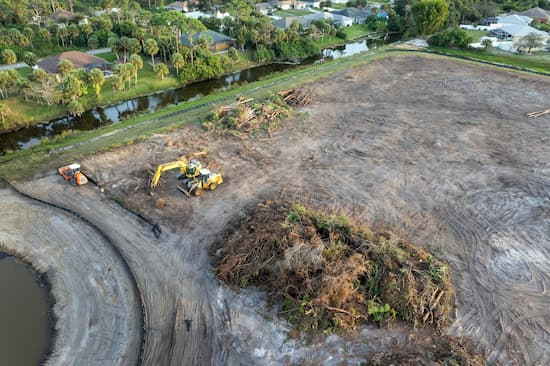
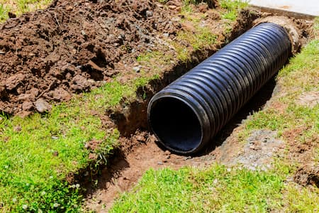
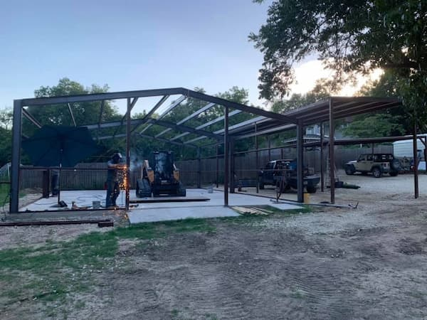

Metal Buildings
Ground-up steel structures built turnkey. Shops, horse barns, carports, RV covers, and commercial buildings with the site work, foundation, welding, and finish trades under one contract.
Metal Buildings →We are the one-stop shop. Steel and concrete, dirt and fence line, and the debris haul off when the job is finished.
Some of these we self-perform, some we run through licensed trades. Either way, the job is ours to manage and ours to stand behind.
Ground-up steel structures built turnkey. Shops, horse barns, carports, RV covers, and commercial buildings with the site work, foundation, welding, and finish trades under one contract.
Metal Buildings →
Shipping containers cut, framed, finished, and delivered as livable space. Guest quarters, hunting camps, short-term rentals, and weekend retreats.
Container Builds →
Old barns, sheds, slabs, and structures torn out and hauled off, plus 11, 15, and 18 yard roll-offs on their own. We run our own cans, so the teardown and the cleanup are one job.
Demolition & Dumpsters →
Driveways, slabs, sidewalks, stamped decking, and retaining walls, plus the pad prep, grading, and drainage correction that has to happen underneath all of it.
Concrete & Dirt →
Pipe, creosote, and traditional ranch fencing welded and set on site, plus riding arenas built from cleared ground to finished rail, gates, and custom entrances.
Fencing & Arenas →
Ground-up builds, additions, and any project that needs one general contractor coordinating every licensed trade from the first stake to the final walk.
More Below →Bar D is locally owned and family operated, and the work is executed through fully licensed and insured subcontractors that we coordinate as the general contractor. One number to call from raw ground to finished build. For anybody building on undeveloped land, that is the actual value: you are not chasing six contractors and hoping their calendars line up.
Standalone services you can hire us for on their own, or that get folded into a larger build. Call and describe the job.

Brush, mesquite, and tree removal, fence line clearing, and general land improvement. Plenty of people clear a place years before they build on it, or just want the pasture back. We haul the debris off with our own roll-offs while we are there.
Get a Clearing Quote →
Water standing where it should not be, cutting ruts, or running toward a slab. We regrade, cut swales, and move the water somewhere it does not cost you a building.
Get a Drainage Quote →
On-site welding and custom steel fabrication. Gates, columns, brackets, repairs, and one-off pieces made to fit the job instead of forcing the job to fit a stock part.
Ask About Fabrication →
Overlook decks built out over a bluff, storefront renovations, tree houses, and the jobs that are not out of a catalog. If you can describe it and it can be built, call and ask.
See Specialty Projects →Real answers to the questions that come up most. If yours is not here, call and ask.
We work up to 75 miles in every direction from Stephenville, which covers Erath County and a wide stretch of the surrounding Central and North Texas ranch country. If you are not sure whether your property falls inside that, call and ask. We will tell you straight either way.
We build them ground up. That means clearing and cutting the pad, correcting drainage, pouring the foundation, setting and welding the steel, and coordinating every finish trade after it. We are not an erection crew that shows up after somebody else did the hard part.
It means one number to call from raw ground to finished build. We act as the general contractor and coordinate licensed and insured trades for concrete, electrical, plumbing, and HVAC. You are not lining up six contractors and refereeing their schedules.
Every trade on our jobs is fully licensed and insured. Texas does not license general contractors at the state level, but the trades that are licensed, including electrical, plumbing, and HVAC, are handled by licensed professionals. Ask us for current certificates on your job and we will get them to you.
No. Pools are the one thing we do not do. We do pour the concrete decking around them, and we have done exactly that, but the pool itself is a different specialty and you are better served by a pool company.
It depends entirely on size, site conditions, and finish level, so we do not publish numbers that would be wrong for your job. We provide free quotes on everything. Call or send the quote form with your size and location and we will come walk the site and put a real number in writing.
Absolutely. Roll-off dumpster rental is its own service. We deliver, pick up, and dump 11, 15, and 18 yard roll-offs on a daily, weekly, or extended rental, and there is a discount for multiple haul-offs. If you are already doing another job with us, we can bundle it.
Yes. Land clearing, brush removal, demolition, and drainage correction are standalone services. Plenty of people clear a place years before they build on it, or just want the pasture back. We will haul off the debris with our own dumpsters while we are there.
It depends on the size of the job and what is already on the books. Small work like a dumpster drop or a clearing job usually moves quickly. A ground-up building takes scheduling. Call early and we will tell you honestly where you would land.
One call covers the whole list. Give us the project and the location and we will come look at it, at no cost.
(512) 525-6475